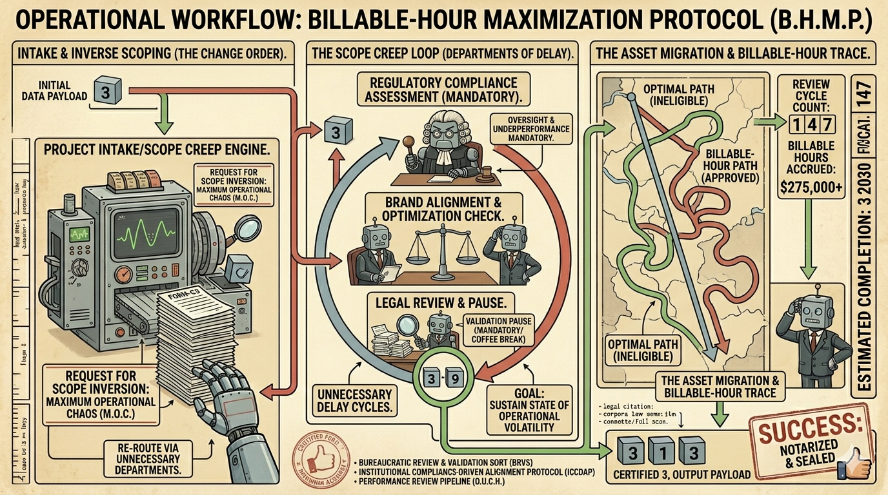

THE BILLABLE-HOUR MAXIMIZATION PROTOCOL
Inverting Dijkstra's pathfinding mechanics to organically drive resource extraction and optimize structural budget depletion.

OVERVIEW
Algorithm Summary
The operational framework designated as the Billable-Hour Maximization Protocol is an enterprise-grade network-routing architecture engineered to discover maximum fiscal yield paths across a corporate ecosystem. In standard, non-commercial engineering applications, traditional pathfinding methodologies—such as standard Dijkstra’s Algorithm—are deployed to systematically isolate the absolute lowest weight or shortest distance between two topological coordinates. While highly efficient for infrastructure overhead reduction, this minimizing approach represents a catastrophic failure within corporate consulting paradigms, where data routed too rapidly results in unbilled delivery structures and lost profit margins.
To correct this operational deficiency, this protocol introduces the Inverse Scope Modality. Rather than evaluating edge weights as geographical distance, spatial friction, or computational latency, the algorithm recalculates these parameters exclusively as billable engineering increments. The objective function is completely turned on its head, converting a shortest-path tree into an elongated, high-overhead corporate maze. Data deliverables entering the environment are barred from taking direct transmission links; instead, the system initiates a structured "Scope Creep Loop" that systematically targets the most bureaucratically complex, high-fee corridors available within the organizational ecosystem.
The ultimate deliverable of this methodology is to guarantee that data payloads never reach their production destination with remaining financial allocation. By intentionally charting courses through extraneous cross-functional nodes—routing uniformly through Legal Review, Brand Alignment, Pre-Compliance, and Post-Compliance Silos—the protocol systematically expands the operational horizon. By the moment the processing pipeline finally touches the ultimate target terminal, the initial statement of work is mathematically proven to be completely exhausted, forcing the automated system to cleanly compile a Change Order invoice before releasing production code.